PRIMARY · HORIZONTAL
STACKED

Round 2 Customs — Wordmark Lockups
Use on near-black backgrounds. Maintain padding ≥ 1× the height of the "R" stem on all sides. Stacked variant for square/social placements.